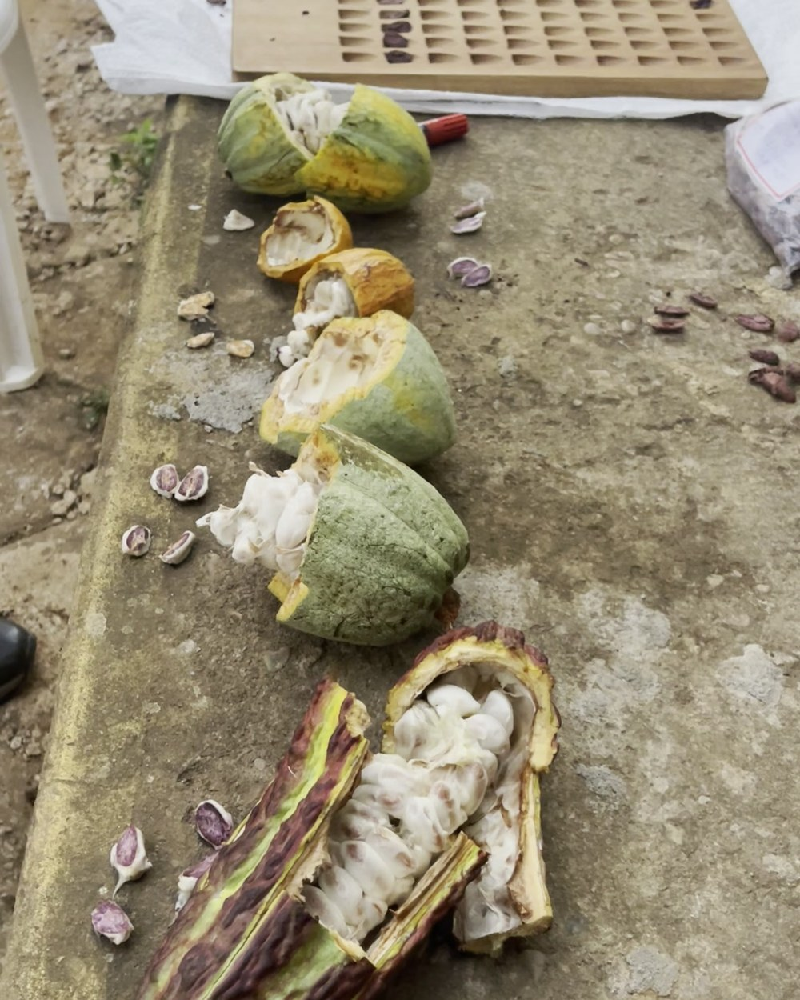
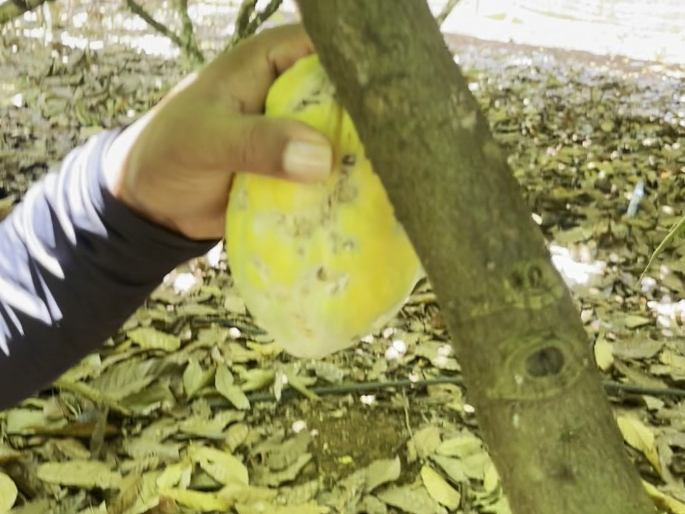
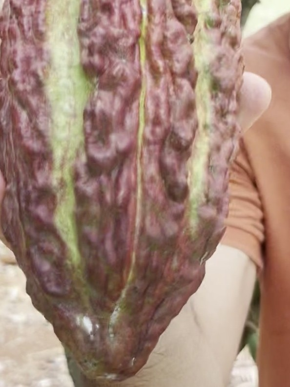

Four short clips from a farm in Pará said there were two cacao varieties here. Five more clips, filmed the same week, said at least four — and the farmer holding them still doesn’t have all the names.
We walked Jedielcio’s farm twice. The first walk ran a hundred and one seconds and seemed to settle the argument: one tree fruits all year, one tree doesn’t, and that difference alone explains a lot about how a smallholder family manages cash flow. The second walk — nine more clips, a cracked-open row of pods on a concrete bench, a fermentation lesson conducted half in jest — complicated it in the right way. This post is the corrected version.
The first walk
Jedielcio de Jesus Oliveira is the Technical Advisor (Assessor Técnico) for CEPOTX — the cooperative, based in Altamira, Pará, that supplies our organic beans and ships the almonds to Bahia for conversion. He is not the cooperative; he is the person who connects it to a farm, a tree, a family. He is also, separately, completing a master’s in Agronomy at UFRA with a thesis on the physical-chemical and sensory characteristics of cocoa beans from this exact region — which is a fair amount of the reason a camera keeps finding him crouched over an open pod asking what it is. He walks his trees the way a sailor walks a deck: naming each one, reading the season off the pods.
He pointed to one tree first. A grafted variety he named on camera — asked directly, he answered “651” and then “Ponta Verde” — green-tipped, smooth pods, shallow ribbing, blunt noses, bright yellow when ripe. “Sempre vai ter frutos… durante todo o ano,” he said. There are always fruits, all year long.

Then he gestured at the other cacao on the same ground. “Essas outras cabaças,” he called them — the common cacao. Deeply furrowed pods, eight to ten ridges, pointed tips, crimson-purple when ripe. “Um período que não tem fruto nenhum.” A stretch with no fruit at all.

Same farm. Same soil. Same rain. Two plants, two calendars, two economies — and, we assumed after four clips, the whole story.
The second walk
It wasn’t. A second batch of footage from the same visit — nine clips this time, transcribed in the farmer’s own Portuguese rather than summarised from notes — shows Jedielcio and a colleague working down a row of freshly opened pods on a concrete bench, calling out names as they go: “PS1319” for one. “Híbrido, 151,” for the one next to it. Elsewhere, a third pod is logged as “C-151.” Whether that third code names a different plant from the “híbrido 151” or is shorthand for the same one, the clips don’t settle — which is itself the point of this post.
Then the line that made us rewrite this piece. Working through the row, the voice on camera says it plainly: “Precisamos estudar melhor, mas são variedades diferentes. É importante saber que são variedades diferentes… e esse aqui são outras variedades que a gente precisa identificar, diferenciar.” We need to study this more, but they are different varieties. It’s important to know they’re different varieties — and this one here is other varieties we still need to identify, to differentiate.
That is a working cacao agronomist, on his own bench, telling the camera he hasn’t finished the count. We think that is more useful to publish than a tidy answer would have been.
What we’re not going to claim
An earlier draft of this post identified the year-round tree as a specific well-known high-yield hybrid clone, complete with a breeding pedigree and a cupping-panel comparison from a study conducted in Ecuador. We’re removing that claim. Nothing on any of the thirteen clips from this farm names that clone, and pattern-matching “grafted, smooth pod, fruits year-round” to one specific famous hybrid — when the farmer’s own vocabulary for his trees is 651, Ponta Verde, PS1319, and 151 — would have been exactly the kind of misidentification a field dispatch should be catching, not committing. Genetics work in a lab could confirm or rule out a shared lineage. Until then, we’re using the names the farm actually uses.
We also ran every frame through an independent vision model as a check on our own eyes, rather than just trusting a hunch. Its read matched the farmer’s: the deeply furrowed crimson pod is visually distinct from everything else on the bench, but the various smooth yellow-to-green pods — the ones carrying names like Ponta Verde, PS1319, and 151 — look close enough to each other that no camera, human or machine, can sort them by sight alone. Telling them apart is a record-keeping problem, not a looking problem. That is precisely why the farm needs a Jedielcio, not just a photo.
What the fruiting calendar means at home
“Sempre vai ter frutos.” There are always fruits. Translate that from agronomy into household economics and it says: there is always income. There is always something to harvest, ferment, sell. The family’s cash flow does not have a dead season.
“Um período que não tem fruto nenhum.” The traditional tree has a stretch with nothing. In a good year that stretch is a pause; in a bad one it’s a gap in the budget where school fees and seed money and the mechanic’s bill all live.
This part of the story doesn’t need a variety ID to be true. A farm that grows both a year-round tree and a seasonal one is hedging its own kitchen table against the calendar — and doing it with plants it is still in the process of naming.
| Named so far | What we know |
|---|---|
| Ponta Verde (651) | Smooth yellow pod, fruits year-round, grafted |
| Common cacao | Deeply furrowed crimson pod, strongly seasonal |
| PS1319 | Named on camera during pod-opening; morphology not yet described |
| Híbrido 151 / C-151 | Named as hybrid stock; possibly one plant, possibly two — unresolved |
| “Outras variedades” | The farmer’s own words — more pods on the bench than names for them |
Why a farm in Pará ends up this diverse
Pará is Brazil’s leading cacao state, and much of its new planting is going into agroforestry systems on former pasture — the same model the DAO’s mission of restoring 10,000 hectares of Amazon rainforest is built around. Smallholders in that model plant what survives, what a neighbour shared as seed, what a graft happened to take — year after year, tree after tree, without always keeping a formal ledger of what went in the ground. The result, on a farm like this one, is a working orchard that’s also an informal genebank: real diversity, only partly catalogued, carrying real economic weight regardless of whether every pod has a name yet.
That is not a gap in the story. It is the story — and it is why a signed record on a QR code and a farmer’s own words on video have to run in parallel. The ledger can tell you the cooperative, the farm, the shipment. Only the walk tells you a working agronomist looked at his own trees and said we need to study this more.
The ledger both sides keep
Every bag of Agroverse cacao carries a signed record of where it came from — the cooperative, the farm, the tree. The walk with Jedielcio is the part no QR code can carry: the farmer’s own words about his own trees, in his own language, on his own land, including the parts he hasn’t finished figuring out. The two ledgers run in parallel, and both are true.
The next time someone hands you a confident variety name for a smallholder cacao farm, ask them how many clips they watched. Then go find a farmer willing to say, on camera, that he isn’t sure yet.